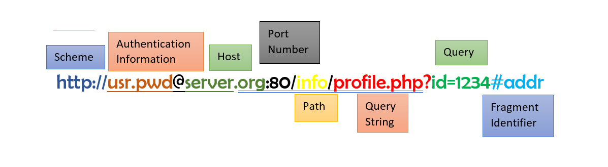

| YEAR | DESCRIPTION |
|---|---|
| 1969 | Four computers were linked up together, and the ARPANET was born, which later then became the Internet. |
| 1971 | The first email sent by Ray Tomlinson, who is known for introducing "@" sign as the locator in email address. |
| 1989 | The world Wide Web was invented by Sir Time Berners-Lee while working CERN in Switzerland. |
| 1991 | HTTP 0.9 |
| 1996 | HTTP 1.0 |
| 1998-1999, 2014 | HTTP 1.1 |
| 2015 | HTTP 2 |
HTTP provides support for other functionalities, such as...
HTTP resources are identified using HTTP URL
| METHOD | DESCRIPTION |
|---|---|
| OPTIONS | Allows you to query
Communication option available for the target resource. Request target may be *, in which case the request applies to the server in general rather than a specific resource. |
| GET | Transfers a current selected representation of the resouce identified by the request URI: the retrieved resource is returned in the message body of the response as an entity |
| HEAD | The HEAD method is identical to GET except that the server MUST NOT return a message-body in the response. |
| POST | UProcessing of the representation enclosed in the message body if the request.
Submitting HTML form data. Chrome handles URL even if it is long. Information will not display at URL and using lag. Search Friendly URL – query part can’t be generated. |
| PUT | Creates or replace the state of the target resource with state defined by the representation enclosed in the request message payload. |
| DELETE | RRemove the association between the target resource and its current functionality. |
| TRACE | – It echoes back whatever the server sends.
Application-level loop-back of the request message. Used for testing/troubleshooting of the real response chain. |
| CONNECT | Requests the establishment of a tunnel to the destination origin server, and if successful thereafter restrict its behaiour to blind-forwarding of packets in both directions, until the tunnel is closed.
Commonly used to create an end-to-end virtual connection through on or more proxies which can be secured using TLS. |
Request headers contain more information about the resource to be fetched or about the client itself.
| STATUS CODE | DESCRIPTION |
|---|---|
| 100 | Continue |
| 101 | Switching Protocols |
| 102 | Processing (WebDAV) |
| STATUS CODE | DESCRIPTION |
|---|---|
| 200 | OK |
| 201 | Created |
| 202 | Accepted |
| 203 | Non-Authoritative Information |
| 204 | No Content |
| 205 | Reset Content |
| 206 | Partial Content |
| 207 | Multi-Status (WebDAV) |
| 208 | Already Reported (WebDAV) |
| 226 | IM Used |
| STATUS CODE | DESCRIPTION |
|---|---|
| 300 | Multiple Choices |
| 301 | Moved Permanently |
| 302 | Found |
| 303 | See Other |
| 304 | Not Modified |
| 305 | Use Proxy |
| 307 | Temporary Redirect |
| 308 | Permanent Redirect (experimental) |
| STATUS CODE | DESCRIPTION |
|---|---|
| 400 | Bad Request |
| 401 | Unauthorized |
| 402 | Payment Required |
| 403 | Forbidden |
| 404 | Not Found |
| 405 | Method Not Allowed |
| 406 | Not Acceptable |
| 407 | Proxy Authentication Required |
| 408 | Request Timeout |
| 409 | Conflict |
| 410 | Gone |
| 411 | Length Required |
| 412 | Precondition Failed |
| 413 | Request Entity Too Large |
| 414 | Request-URI Too Long |
| 415 | Unsupported Media Type |
| 417 | Expectation Failed |
| STATUS CODE | DESCRIPTION |
|---|---|
| 500 | Internal Server Error |
| 501 | Not Implemented |
| 502 | Bad Gateway |
| 503 | Service Unavailable |
| 504 | Gateway Timeout |
| 505 | HTTP Version Not Supported |
| 506 | Variant Also Negotiates (Experimental) |
| 507 | Insufficient Storage (WebDAV) |
| 508 | Loop Detected (WebDAV) |
| 509 | Bandwidth Limit Exceeded (Apache) |
| 510 | Not Extended |
| 511 | Network Authentication Required |
| 598 | Network read timeout error |
| 599 | Network connect timeout error |